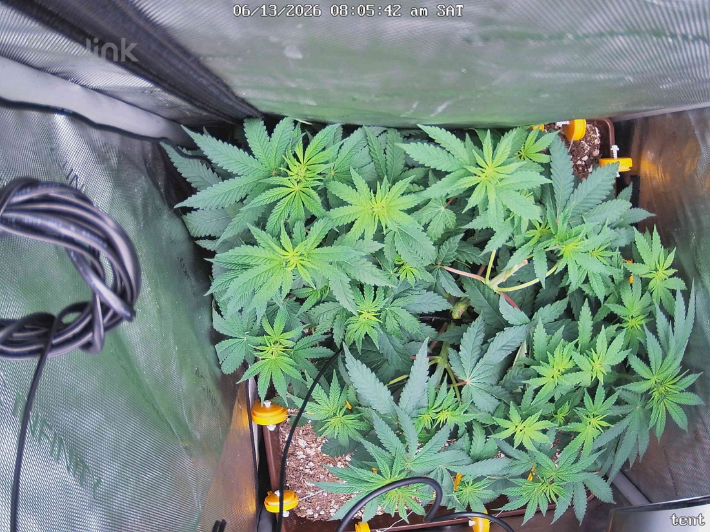

← All reports
Jun 13, 2026
Sat Jun 13, 2026 — 8:05 AM

Prognosis
Day 10 of flower (flipped 6/3), day ~46 from sprout. Here's the read on the two snapshots:
- Growth/structure: Canopy is filling in and spreading wider — the LST is working. More even, table-top distribution in today's shot vs. yesterday; tops are reaching up with fresh light-green new growth at the apexes. Healthy upward posture, no overnight droop.
- Color: Predominantly deep, even green with the expected lighter lime new growth at the tips. No yellowing patterns, no interveinal chlorosis, no edge/tip burn at 600 PPFD. Living soil looks like it's keeping nitrogen steady.
- Posture/turgor: Leaves are flat and praying-ish, no tacoing, no clawing, no heat stress. Good turgor 17h after the 6/12 bottom-water — soil moisture looks right.
- Pests: No webbing, no fresh stippling visible at this resolution, no visible mites. Consistent with your 6/11 hands-on inspection finding zero. Camera can't confirm undersides, though — keep doing the manual checks.
- Defoliation: Bottom-clearing from 6/11 reads well — less leaf litter touching soil, better airflow underneath. No re-crowding yet.
- Soil surface: Looks appropriately moist, not soggy or crusted-dry. No mold/algae on the surface.
Phase check: Right where it should be — ~1.5 weeks into 12/12, you'd expect this stretch-and-fill stage with stacking nodes and tops elongating before bud sites set. On track.
Next actions:
- Tonight is a Green Cleaner round if you're holding the every-3-days cadence (last spray 6/10 → due ~6/13). Don't skip just because you saw no mites — you're spraying to catch the egg-hatch cycle, not live adults. Undersides until dripping, lights-off.
- Keep manually checking leaf undersides each spray; if 2–3 consecutive rounds stay clean you can taper.
- Otherwise no action needed — watering/light are dialed.
Overall: Healthy, vigorous, well-trained plant progressing normally into flower stretch — only open item is staying on the mite-spray schedule as a preventative.